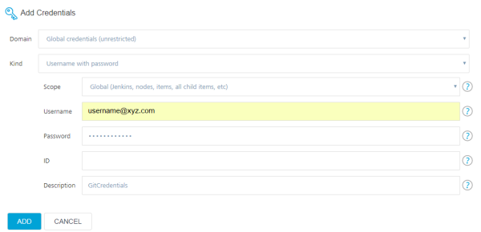
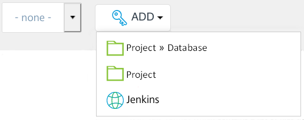
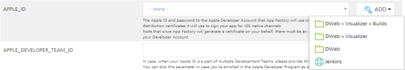
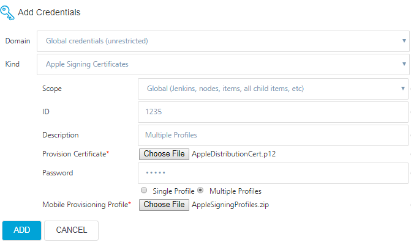
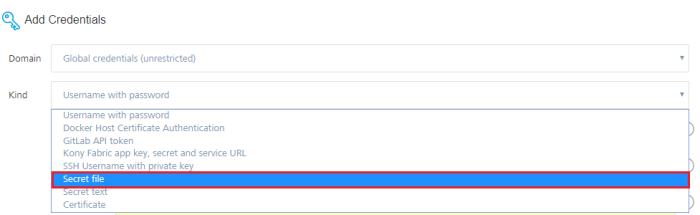

Managing Credentials
The following sections explain the different types of credentials that can be added to App Factory. You can add new credentials, edit existing credentials, and also delete existing credentials.
Adding New Credentials
Adding New Volt MX Cloud Credentials
A Iris project connects to Volt MX Foundry to create and publish back-end services. To use Volt MX Foundry, you need to add the Volt MX Cloud credentials to your project.
To add Volt MX Cloud credentials to your project, follow these steps.
- From the Volt MX Iris & Foundry section in the buildIrisApp job, next to the FOUNDRY_CREDENTIALS_ID parameter, click ADD. A drop-down list appears.
-
From the drop-down list, select the scope at which you want to add the new credentials.

Note: As HCL typically provides only one set of these credentials per customer, HCL recommends that you store this credential type in the Jenkins scope to share it across projects and to avoid creating unnecessary duplicates.

-
In the Add Credentials window, from the Kind list, select Username and Password.
Note: In the Domain field, make sure that the Global Credentials (Unrestricted) domain is selected.
 ]
] -
Configure the parameters that appear on the Add Credentials window. For more information about the parameters, refer to the following table. ]
Parameter Description Scope Specifies the level at which the credentials are used. Contains the following options:System: The credentials are available to the associated object. Credentials with a System scope are used for email, authentication, slave connection, and scenarios in which the Jenkins instance uses the credentials.Global: The credentials are available to the associated object and also to the child objects. The credentials with a global scope are typically used for the additional requirements of a job.Note: For Cloud credentials, select Global. Username Specifies the Username of your Volt MX Cloud instance. Password Specifies the Password of your Volt MX Cloud instance. ID Specifies the unique identifier that jobs and other configurations use to identify the credentials.Note: HCL strongly recommends that you specify an ID that you can easily recognize.If this field is left blank, an ID is automatically generated, which you may not be able to recognize later. Description Specifies the details about the credentials. This is an optional field.HCL recommends that you provide a unique description so that you can easily distinguish the credentials while triggering a build. -
After you configure the parameters, click Add.
- On the buildIrisApp job, from the FOUNDRY_CREDENTIALS_ID list, select the credentials that you added.

Adding new Volt MX Foundry App Config
A Volt MX Foundry App configuration connects to the specified back-end services while building a Iris app. In the FOUNDRY_APP_CONFIG parameter, you can specify the details of your app such as the host URL, app name, environment, and app version. The details are used to fetch the app services document, binding the app to an environment, and publish the app to the environment.
To add a Foundry app configuration, follow these steps:
- From the Volt MX Iris & Foundry section in the buildIrisApp job, next to the FOUNDRY_APP_CONFIG parameter, click ADD. A drop-down list appears.
-
From the drop-down list, select the scope at which you want to add the new credentials.

Note: As HCL typically provides only one set of these credentials per customer, HCL recommends that you store this credential type in the Jenkins scope to share it across projects and to avoid creating unnecessary duplicates.
-
In the Add Credentials window, from the Kind list, select Foundry App Configuration.
Note: In the Domain field, make sure that the Global Credentials (Unrestricted) domain is selected.

-
Configure the parameters that appear on the Add Credentials window. For more information about the parameters, refer to the following table.
Parameter Description ID Specifies the unique identifier that jobs and other configurations use to identify the credentials.Note: HCL strongly recommends that you specify an ID that you can easily recognize.If this field is left blank, an ID is automatically generated, which you may not be able to recognize later. Description Specifies the details about the credentials. This is an optional field.HCL recommends that you provide a unique description so that you can easily distinguish the credentials while triggering a build. Environment Name Specifies the Volt MX Foundry name to which you want to publish the Foundry app. Application Name Specifies the name of the Foundry app that you want to bind to the project. Application Version Specifies the version of the Foundry app that you want to bind to the project. Foundry Host Environment Specifies the location of the Foundry server on which the cloud environment is hosted.Contains the following options:manage.hclvoltmx.com/manage.hcl.comThis check box specifies that the Foundry environment is hosted on the HCL AWS Cloud.When you select this check box, the Account ID parameter appears.On-Premise/CloudThis check box specifies that the Foundry environment is hosted on-premises or on other clouds (such as Azure).When you select this check box, the Console URL and Identity URL parameters appear. Account ID Specifies the account ID of the cloud on which the Foundry environment is hosted.The default account ID for this field is for the cloud that is linked to your App Factory environment. If you want link the project to a different cloud, type the account ID in the text box.This parameter is applicable only if manage.hclvoltmx.com/manage.hcl.com is selected as the Foundry Host Environment. Console URL Specifies the IP address (or the DNS) and port of the Foundry Console server. For example: http://1.2.10.20:8080This parameter is applicable only if On-Premise/Cloud is selected as the Foundry Host Environment.Note: The Foundry Console server must be accessible from the App Factory build environment.If the Foundry Console is behind a firewall, make sure that the IP address is white-listed.If the Foundry Console is on a local on-premise setup, make sure that you enable public IP.Identity URL Specifies the IP address (or the DNS) and port of the Foundry identity server. For example: http://1.3.10.30:8080This parameter is applicable only if On-Premise/Cloud is selected as the Foundry Host Environment.Note: The Foundry identity server must be accessible within the App Factory build environment.If the Foundry identity server is behind a firewall, make sure that the IP address is white-listed.If the Foundry identity server is on a local on-premise setup, make sure that you enable public IP. -
Validate the details that you entered for the parameters, and then click ADD.
- On the buildIrisApp job, from the FOUNDRY_APP_CONFIG list, select the credentials that you added.
Adding a Sonar Token
A Sonar token is used to sign-in to your SonarQube cloud. To add a Sonar token as credentials, follow these steps:
- From the SonarQube section in the Iris Project Settings, next to the Login Token setting, click ADD. A drop-down list appears.
- From the drop-down list, select the scope at which you want to add the new credentials.
-
In the Add Credentials window, from the Kind list, select Sonar Token.
Note: In the Domain field, make sure that the Global Credentials (Unrestricted) domain is selected.
-
Configure the parameters that appear on the Add Credentials window. For more information about the parameters, refer to the following table.
Parameter Description ID Specifies the unique identifier that jobs and other configurations use to identify the credentials.Note: HCL strongly recommends that you specify an ID that you can easily recognize.If this field is left blank, an ID is automatically generated, which you may not be able to recognize later. Description Specifies the details about the credentials. This is an optional field.HCL recommends that you provide a unique description so that you can easily distinguish the credentials while triggering a build. Sonar Token Specifies the authentication token that is used to login to the SonarQube server. -
After you configure all the parameters, click Add.
- In the Project Settings, from the Login Token list, select the credentials that you added.
Adding New Source Control Repository Credentials
App Factory signs-in to your repository to check-out and build the Iris project. To build a Iris app, you need to add the source code repository credentials to your project.
Note: If your repository is protected with 2FA (two-factor authentication) in GitHub, you need to add the GitHub credentials to your project. For more information, refer to GitHub 2FA.
To add source code repository credentials, follow these steps.
- In the Source Control section of the Iris Project Settings or Foundry Project Settings, next to the SCM Credentials setting, click ADD. A drop-down list appears.
-
From the drop-down list, select the scope at which you want to add the new credentials.
Note: As developers typically use the different GitHub accounts for different projects, HCL recommends that you store this credential type at the project level scope to keep it local to the project.
 ](Resources/Images/projectSettings_credentials_Jenkins.png)
](Resources/Images/projectSettings_credentials_Jenkins.png) -
In the Add Credentials window, from the Kind list, select Username and Password.
-
Configure the parameters that appear on the Add Credentials window. For more information about the parameters, refer to the following table.
Parameter Description Scope Specifies the level at which the credentials are used. Contains the following options:System: The credentials are available to the associated object. Credentials with a System scope are used for email, authentication, slave connection, and scenarios in which the Jenkins instance uses the credentials.Global: The credentials are available to the associated object and also to the child objects. The credentials with a global scope are typically used for the additional requirements of a job. Username Specifies the user name of your SCM credentials.Note: If your repository is protected with 2FA (two-factor authentication) on GitHub, then the Username is your GitHub user name. For more information, refer to GitHub 2FA. Password Specifies the password of your SCM credentials.Note: If your repository is protected with 2FA (two-factor authentication) on GitHub, then the Password is the GitHub personal access token. For more information, refer to GitHub 2FA. ID Specifies the unique identifier that jobs and other configurations use to identify the credentials.Note: HCL strongly recommends that you specify an ID that you can easily recognize.If this field is left blank, an ID is automatically generated, which you may not be able to recognize later. Description Specifies the details about the credentials. This is an optional field.HCL recommends that you provide a unique description so that you can easily distinguish the credentials while triggering a build. -
After you configure the parameters, click Add.
- In the Source Control section in the Project Settings, from the SCMCredentials list, select the credentials that you added.
Add SSH Key Credentials
If the source code URL for your project is an SSHURL, you need to add the SSH key credentials that act as the source code repository credentials for the project.
Note: You need to generate and add the SSH key to your GitHub account before you add the key in App Factory. For more information, refer to Generating a New SSH key and Adding the New SSH key to your GitHub Account.
To add new SSH key credentials to your project, follow these steps.
- In the Source Control section of the Iris Project Settings or Foundry Project Settings, next to the SCM Credentials setting, click ADD. A drop-down list appears.
-
From the drop-down list, select the scope at which you want to add the new credentials.
Note: As developers typically use the different GitHub accounts for different projects, HCL recommends that you store this credential type at the project level scope to avoid potential security concerns.
-
In the Add Credentials window, from the Kind list, select SSHUsername with private key.

-
Configure the parameters that appear on the Add Credentials window. For more information about the parameters, refer to the following table.

Parameter Description ID Specifies the unique identifier that jobs and other configurations use to identify the credentials.Note: HCL strongly recommends that you specify an ID that you can easily recognize.If this field is left blank, an ID is automatically generated, which you may not be able to recognize later. Description Specifies the details about the credentials. This is an optional field.HCL recommends that you provide a unique description so that you can easily distinguish the credentials while triggering a build. Username Specifies the user name that is used to identify the SSH key. This parameter is optional.Note: If your repository is protected with 2FA (two-factor authentication) on GitHub, then the Username is your GitHub user name. For more information, refer to GitHub 2FA. Private Key Specifies the Private Key that is related to the Public Key that is linked to GitHub.To configure a Private Key, select Enter Directly, and then click Add.Select the Enter Directly option and click Add to provide the Private key of the related Public Key which is linked in GitHub. Passphrase Specifies the passphrase that is configured while generating the SSH key. -
After you configure the parameters, click Add.
- From the Source Control section in the Project Settings, from the SCMCredentials list, select the credentials that you added.

Adding New Database Credentials
App Factory signs-in to your database to run scripts and commands. To run SQL or Flyway scripts on your database, you need to add the database credentials to your project.
To add the database credentials, follow these steps.
- While configuring parameters for the Flyway job, next to the DB_CREDENTIALS parameter, click ADD.
A drop-down list appears. -
From the drop-down list, select the scope at which you want to add the new credentials.
Note: As developers typically have unique database credentials, HCL recommends that you store this credential type at the project level scope to avoid potential security concerns.
 -
In the Add Credentials window, from the Kind list, select Username and Password.
Note: In the Domain field, make sure that the Global Credentials (Unrestricted) domain is selected.
]
4. Configure the parameters that appear on the Add Credentials window. For more information about the parameters, refer to the following table. Parameter Description Scope Specifies the level at which the credentials are used. Contains the following options:System: The credentials are available to the associated object. Credentials with a System scope are used for email, authentication, slave connection, and scenarios in which the Jenkins instance uses the credentials.Global: The credentials are available to the associated object and also to the child objects. The credentials with a global scope are typically used for the additional requirements of a job. ID Specifies the unique identifier that jobs and other configurations use to identify the credentials.Note: HCL strongly recommends that you specify an ID that you can easily recognize.If this field is left blank, an ID is automatically generated, which you may not be able to recognize later. Description Specifies the details about the credentials. This is an optional field.HCL recommends that you provide a unique description so that you can easily distinguish the credentials while triggering a build. DB_URL Specifies the URL at which the database is hosted. The URL must be in the JDBC format.For example: jdbc:mysql://host1:3060jdbc:mysql://host1:3060/sampledbDB_USERNAME Specifies the username that is used to access your database.Make sure that the user has permissions to write and update schemas. DB_PASSWORD Specifies the password that is used to access your database. -
After you configure the parameters, click Add.
Note: To validate the credentials, click TESTCONNECTION.
- In the Flyway job, from the DB_CREDENTIALS list, select the credentials that you added.
Adding New Apple IDcredentials
App Factory uses credentials of the Apple Developer account to generate signing certificates for iOS apps. If you want to generate certificates by using your Apple Developer account, you need to add the Apple ID credentials to your project.
To add Apple ID credentials to your project, follow these steps.
- While configuring parameters for the buildIrisApp job, next to the APPLE_ID parameter, click ADD.
A drop-down list appears.
 -
From the drop-down list, select the scope at which you want to add the new credentials.
Note: As developers typically have unique Apple ID credentials, HCL recommends that you store this credential type at the project level scope to avoid potential security concerns.

-
In the Add Credentials window, from the Kind list, select Username and Password.
Note: In the Domain field, make sure that the Global Credentials (Unrestricted) domain is selected.
4. Configure the parameters that appear on the Add Credentials window. For more information about the parameters, refer to the following table.
Parameter Description Scope Specifies the level at which the credentials are used. Contains the following options:System: The credentials are available to the associated object. Credentials with a System scope are used for email, authentication, slave connection, and scenarios in which the Jenkins instance uses the credentials.Global: The credentials are available to the associated object and also to the child objects. The credentials with a global scope are typically used for the additional requirements of a job. Username Specifies the user name of your Apple Developer account. Password Specifies the password of your Apple Developer account. ID Specifies the unique identifier that jobs and other configurations use to identify the credentials.Note: HCL strongly recommends that you specify an ID that you can easily recognize.If this field is left blank, an ID is automatically generated, which you may not be able to recognize later. Description Specifies the details about the credentials. This is an optional field.HCL recommends that you provide a unique description so that you can easily distinguish the credentials while triggering a build. -
After you configure the parameters, click Add.
- In the buildIrisApp job, from the APPLE_ID list, select the credentials that you added.

Adding a new signing certificate
App Factory uses certificates to sign the iOS binaries (.ipa). If you want to upload the signing certificates manually, you need to add the certificates to your project.
To add signing certificates to your project, follow these steps.
- While configuring parameters for the buildIrisApp job, next to the APPLE_SIGNING_CERTIFICATES parameter, click ADD. A drop-down list appears.

-
From the drop-down list, select the scope at which you want to add the new credentials.
Note: As developers typically have unique Apple ID credentials, HCL recommends that you store this credential type at the project level scope to avoid potential security concerns.
-
In the Add Credentials window, from the Kind list, select Apple Signing Certificates.
Note: In the Domain field, make sure that the Global Credentials (Unrestricted) domain is selected.
4. Configure the parameters that appear on the Add Credentials window. For more information about the parameters, refer to the following table.
Parameter Description Scope Specifies the level at which the credentials are used. Contains the following options:System: The credentials are available to the associated object. Credentials with a System scope are used for email, authentication, slave connection, and scenarios in which the Jenkins instance uses the credentials.Global: The credentials are available to the associated object and also to the child objects. The credentials with a global scope are typically used for the additional requirements of a job. ID Specifies the unique identifier that jobs and other configurations use to identify the credentials.Note: HCL strongly recommends that you specify an ID that you can easily recognize.If this field is left blank, an ID is automatically generated, which you may not be able to recognize later. Description Specifies the details about the credentials. This is an optional field.HCL recommends that you provide a unique description so that you can easily distinguish the credentials while triggering a build. Provision Certificate Specifies the certificate that is used to sign the iOS binaries ( .ipa).Password Specifies the password for the Provision Certificate that you uploaded. Mobile Provisioning Profile Specifies the provisioning profiles that are used to install the app on specific devices.You can select and upload a Single Profile or Multiple Profiles.Single ProfileYou need to upload a mobile provision fileMultiple ProfilesYou need to upload a zip archive that contains multiple mobile provision filesNote: Wild card provisioning profiles are not supported. -
After you configure the parameters, click Add.
- In the buildIrisApp job, from the APPLE_SIGNING_CERTIFICATES list, select the credentials that you added.

Important: Make sure that the signing certificates and provisioning profiles have not expired. Otherwise, the build fails and an error occurs.
Adding New Android_KeyStore Credentials
The keystore file stores the key that is used to sign the Android binary. To build a Visualize app for Android, you need to add an Android_Keystore file and an Android_KeyStore password to your project.
Important: Make sure that you add Android_Keystore password credentials for every Android_Keystore file.
Creating a New Android_KeyStore File
- While configuring the build parameters for the buildIrisApp job, next to ANDROID_KEYSTORE_FILE, click ADD. A drop-down list appears.
-
From the drop-down list, select the scope at which you want to add the credentials.
Note: If you use the same keystore for multiple apps, you can add the keystore file at the Jenkins scope to use it across different projects. If you use different keystores for different apps, you can add the keystore file at the project level scope.

-
In the Add Credentials window, from the Kind list, select Secret File.
Note: In the Domain field, make sure that the Global Credentials (Unrestricted) domain is selected.
 4. Configure the parameters that appear on the Add Credentials window. For more information about the parameters, refer to the following table.

Parameter Description Scope Specifies the level at which the credentials are used. Contains the following options:System: The credentials are available to the associated object. Credentials with a System scope are used for email, authentication, slave connection, and scenarios in which the Jenkins instance uses the credentials.Global: The credentials are available to the associated object and also to the child objects. The credentials with a global scope are typically used for the additional requirements of a job. File Specifies the Keystore file that is used to sign the Android binaries. ID Specifies the unique identifier that jobs and other configurations use to identify the credentials.Note: HCL strongly recommends that you specify an ID that you can easily recognize.If this field is left blank, an ID is automatically generated, which you may not be able to recognize later. Description Specifies the details about the credentials. This is an optional field.HCL recommends that you provide a unique description so that you can easily distinguish the credentials while triggering a build. -
After you configure the parameters, click Add.
- In the buildIrisApp job, from the ANDROID_KEYSTORE_FILE list, select the credentials that you added.
Creating a New Android_KeyStore Password
- While configuring the build parameters for the buildIrisApp job, next to ANDROID_KEYSTORE_PASSWORD, click ADD. A drop-down list appears.
-
From the drop-down list, select the scope at which you want to add the credentials.
Note: If you use the same keystore for multiple apps, you can add the keystore file at the Jenkins scope to use it across different projects. If you use different keystores for different apps, you can add the keystore file at the project level scope.
-
In the Add Credentials window, from the Kind list, select Secret Text.
Note: In the Domain field, make sure that the Global Credentials (Unrestricted) domain is selected.
4. Configure the parameters that appear on the Add Credentials window. For more information about the parameters, refer to the following table.

Parameter Description Scope Specifies the level at which the credentials are used. Contains the following options:System: The credentials are available to the associated object. Credentials with a System scope are used for email, authentication, slave connection, and scenarios in which the Jenkins instance uses the credentials.Global: The credentials are available to the associated object and also to the child objects. The credentials with a global scope are typically used for the additional requirements of a job. Secret Specifies password for the Keystore file that you uploaded. ID Specifies the unique identifier that jobs and other configurations use to identify the credentials.Note: HCL strongly recommends that you specify an ID that you can easily recognize.If this field is left blank, an ID is automatically generated, which you may not be able to recognize later. Description Specifies the details about the credentials. This is an optional field.HCL recommends that you provide a unique description so that you can easily distinguish the credentials while triggering a build. -
After you configure the parameters, click Add.
- In the buildIrisApp job, from the ANDROID_KEYSTORE_PASSWORD list, select the credentials that you added.
Adding Keys for Protected Mode Build
App Factory provides an option to build protected binaries for both Android and iOS platform by using Volt MX Iris. To build an app in protected mode, you need to add keys to your project.
To add protected mode keys to your project, follow these steps.
- While configuring the build parameters for the buildIrisApp job, from the Protected Build section, next to PROTECTED_KEYS, click ADD. A drop-down list appears.
-
From the drop-down list, select the scope at which you want to add the credentials.
Note: As teams typically use one set of protected mode keys across multiple apps, HCL recommends that you store this credential type in the Jenkins scope to share it across projects and to avoid creating unnecessary duplicates.
-
In the Add Credentials window, from the Kind list, select Protected Mode Build Keys.
Note: The Domain field displays Global Credentials (Unrestricted).
4. Configure the parameters that appear on the Add Credentials window. For more information about the parameters, refer to the following table.

Parameter Description Scope Specifies the level at which the credentials are used. Contains the following options:System: The credentials are available to the associated object. Credentials with a System scope are used for email, authentication, slave connection, and scenarios in which the Jenkins instance uses the credentials.Global: The credentials are available to the associated object and also to the child objects. The credentials with a global scope are typically used for the additional requirements of a job. Public Key Specifies the public key that is used for encryption and to protect the app. Private Key Specifies the private key that is used for encryption and to protect the app. Fin Keys Specifies the fin keys that you want to use for the app.Fin Keys must be uploaded in a zip archive. The key files must be at the root of the zip archive, which must not have any sub-folder within the zip.  Note: For versions V8 ServicePack 3 or later. uploading Fin Keys is optional.
Note: For versions V8 ServicePack 3 or later. uploading Fin Keys is optional.ID Specifies the unique identifier that jobs and other configurations use to identify the credentials.Note: HCL strongly recommends that you specify an ID that you can easily recognize.If this field is left blank, an ID is automatically generated, which you may not be able to recognize later. Description Specifies the details about the credentials. This is an optional field.HCL recommends that you provide a unique description so that you can easily distinguish the credentials while triggering a build. -
After you configure the parameters, click Add.
- In the buildIrisApp job, from the PROTECTED_KEYS list, select the credentials that you added.

Adding Secure JS properties
App Factory provides an option to protect web applications as part of the automated build by obfuscating their Javascript logic. To build a web app in protected mode, follow these steps.
- In the Volt MX Iris & Foundry section of the buildIrisApp job, from the BUILD_MODE list, select release-protected.

- From the Web Protection section in the buildIrisApp job, next to the OBFUSCATION_PROPERTIES parameter, click ADD. A drop-down list appears.
-
From the drop-down list, select the scope at which you want to add the new credentials.
Note: As HCL typically provides only one set of these credentials per customer, HCL recommends that you store this credential type in the Jenkins scope to share it across projects and to avoid creating unnecessary duplicates.
-
In the Add Credentials window, from the Kind list, select Secure JSProperties.
Note: In the Domain field, make sure that the Global Credentials (Unrestricted) domain is selected.

-
Configure the parameters that appear on the Add Credentials window. For more information about the parameters, refer to the following table.
Parameter Description Scope Specifies the level at which the credentials are used. Contains the following options:System: The credentials are available to the associated object. Credentials with a System scope are used for email, authentication, agent connection, and scenarios in which the Jenkins instance uses the credentials.Global: The credentials are available to the associated object and also to the child objects. The credentials with a global scope are typically used for the additional requirements of a job. ID Specifies the unique identifier that jobs and other configurations use to identify the credentials.Note: HCL strongly recommends that you specify an ID that you can easily recognize.If this field is left blank, an ID is automatically generated, which you may not be able to recognize later. Description An optional free text field. Consumer Key Specifies the consumer identifier that is used to invoke protection API calls (on your behalf) to obfuscate your web app.This is the value of the ciproperty in thesecurejs.propertiesfile that you must request from the Support team.Consumer Secret Specifies the consumer secret that is used to invoke protection API calls (on your behalf) to obfuscate your web app.This is the value of the csproperty in thesecurejs.propertiesfile that you must request from the Support team.Encryption Key Specifies the base64-encoded symmetric encryption key, which is itself encrypted with your RSA public key.This is the value of the idproperty in thesecurejs.propertiesfile that you must request from the Support team. -
After you configure the parameters, click Add. In the buildIrisApp job, from the OBFUSCATION_PROPERTIES list, select the credentials that you added.

Deleting Credentials
- On the left pane of the App Factory Console, click Credentials . A list of credentials appears.

-
Select the credentials that you want to delete. The details page of the credentials appears.

-
On the left pane, click Delete. A confirmation message is displayed.

-
On the confirmation message, click Yes.

Important:
The following credentials are system driven credentials. Do not delete these credentials.
- jenkins_github_ssh-certificates
- jenkins_github_ssh-voltmx-common
- jenkins_github_ssh-voltmx-jenkins-job-DSL